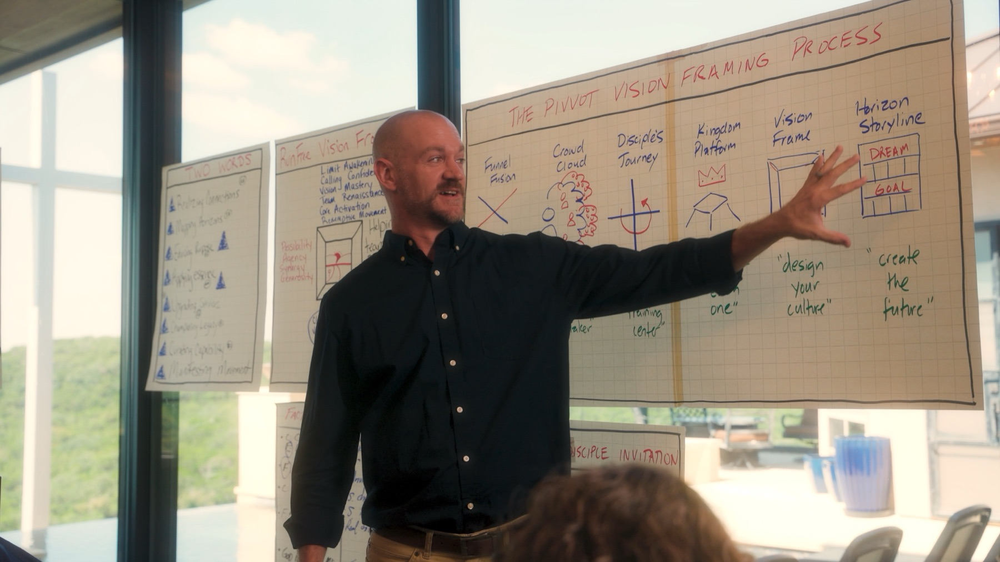
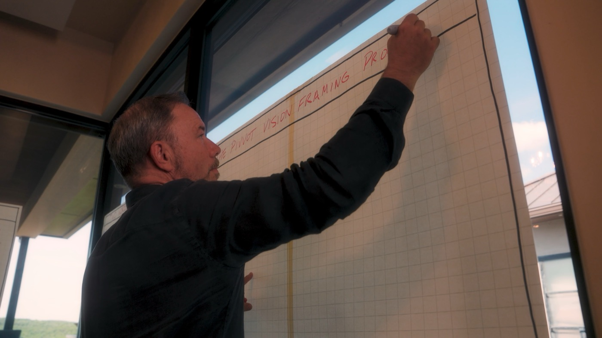
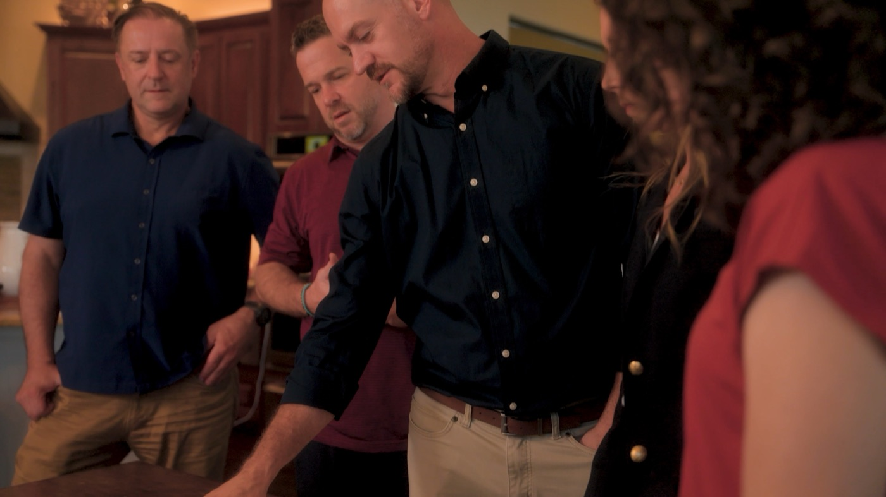
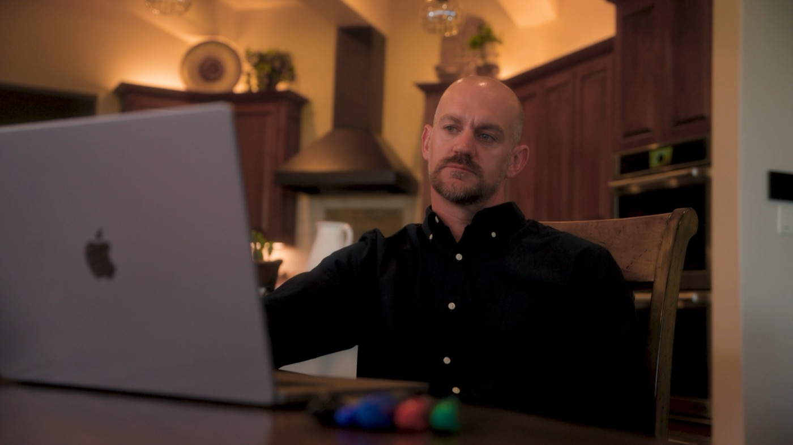

In partnership with CCL Network
Funded in part by a Lilly Endowment grant
Book a call
Funded in part by a Lilly Endowment grant
A 10-month coached cohort for churches around 200 or less. You bring four key leaders, we meet one afternoon a month, and you leave with your church's vision on one page — mission, values, strategy, measures, and where God is taking you — that your team can actually lead from.
The call is free, 30 minutes, no commitment. Most churches start there.
"This class has catapulted our fellowship into a new season of ministry."Jose Dominguez, pastor of a church under 200 — Luz Del Valle, Keizer, OR
Normally $5,000 per church. $2,500 for this cohort through the CCL Network's Lilly Endowment grant — $500 to start, then $250 a month. Four of the eight seats are taken.

Tell Andrew about your church and your team. He'll tell you honestly whether the co::Lab is a fit — and if it isn't, he'll say so.
Your lead pastor plus the three people who carry the weight of direction — elders, staff, key volunteers. Register when your team is ready. Nothing is due at registration.
One afternoon a month for ten months, coached, alongside seven other churches. You finish with a vision your whole team built and a plan for the next five years.
Free · 30 minutes · no commitment
Andrew walks through what the co::Lab is, what your team builds month by month, and why the CCL Network is covering half the cost. About 16 minutes — worth it before you book a call.
The church rarely lacks events, programs, or content. Somewhere along the way, the Great Commission quietly got rewritten in practice into something much smaller:
That's the problem underneath the problems: over-programmed and under-discipled. Most people connect to a church through its building, its programs, and its people — and every one of those can change overnight. Underneath all of it is the question that rarely gets answered together: what is this church actually here to do, and how would we know it's working? Not because leaders don't care. Because nobody ever gave them the tools, a guide, and the protected time with their team to work it out.
That deep work is exactly what the co::Lab is.

The first three are churches under 200 that recently walked this process with RunFree. The other three are among the largest churches in the country. Same tools, same questions.
"This class has catapulted our fellowship into a new season of ministry. It taught me to go from a program church to a mission-oriented, disciple-making church… We have baptisms and new believers coming into the fellowship through intentional, discipleship-focused ministry."
"Our journey with RunFree has been transformative… a clear sense of direction, helping us gain clarity on what is truly important in our desire to see God's Kingdom advanced in our local area. I highly recommend RunFree to any church seeking to deepen its clarity and effectiveness."
"Working with [the RunFree team] has added fuel and clarity to the direction we were already passionate about… somehow that's produced increased energy and joy in me. I think my team feels it too and we're excited for what's ahead."
We went from 15 competing priorities to 3 clear ones. Our staff has never been more focused.
The Vision Frame gave us language our entire leadership team could rally behind. Game changer.
RunFree helped us align 30,000 members around a clear, compelling vision for the first time in decades.
Thirty minutes with Andrew, free, no commitment. Tell him where your church is, ask anything, and hear an honest answer about whether this is your next step.
Book a free call with AndrewThe Pivvot process moves your team through six stages — each with a proven master tool and a mantra your leaders will still be repeating years from now.
Name the real problem. Redefine success beyond attendance and programs, and fuse Jesus' multiplication model into your ministry model.
Not a conference and not a consultant. A small cohort, your real team, and a coach who's done this with churches your size.

Ask four of your leaders where the church is going and you'd get four answers. You want one — in a sentence, in your own words, not borrowed from a bigger church — and you're willing to do the work with your team to find it.
The co::Lab is designed for normal-size churches — the backbone of the Kingdom. Larger churches are welcome; talk with Andrew about fit for your context.
Your elders and key staff journey with you. Alignment isn't bolted on at the end — it's built in from the first session, so the vision belongs to the whole team.
A free 30-minute call. Tell Andrew about your church and your team, ask anything, and hear honestly whether this is a fit — no commitment.
Prefer email? andrew@runfree.co
The Vision Frame is 21 years old — and it is no theory. More than 3,000 churches have been guided through the full process, and over 40,000 church teams have used the Vision Frame. The co::Lab draws directly from Church Unique, God Dreams, Younique, and Future Church — and your team gets digital access to the full library for the entire year.
Your coach is Andrew Estes, RunFree Vision Coach. Andrew was trained by Will Mancini, co-facilitates alongside him, and has walked church teams — most of them under 200 — through this exact process for years.
"Every church needs a strategic outsider — a trusted confidant, a well-equipped guide who helps them get out of the echo chamber, out of their own way, into clarity."
 Will ManciniFounder of the Vision Frame · Author of Church Unique, God Dreams, Younique & Future Church
Will ManciniFounder of the Vision Frame · Author of Church Unique, God Dreams, Younique & Future Church
 Church UniqueThe Vision FrameBuy on Amazon ↗
Church UniqueThe Vision FrameBuy on Amazon ↗
 God DreamsHorizon StorylineBuy on Amazon ↗
God DreamsHorizon StorylineBuy on Amazon ↗
 Future ChurchFunnel FusionBuy on Amazon ↗
Future ChurchFunnel FusionBuy on Amazon ↗
 YouniquePersonal callingBuy on Amazon ↗
YouniquePersonal callingBuy on Amazon ↗
Digital access to the full library is included for your whole team, all year.

Team,
I'd like our church to join the Pivvot Vision Framing co::Lab — a 10-month guided journey with RunFree.Co, in partnership with CCL Network.
It's built on the Vision Frame methodology that more than 3,000 churches and 40,000 church teams have used. Our lead team would meet virtually 4 hours a month, and by the end we'd have two finished deliverables: a codified Vision Frame (our mission, values, strategy, and measures) and a Horizon Storyline (a long-range plan we can actually execute).
The investment is normally $5,000 per church, but a Lilly Endowment grant through CCL Network covers half — so it's $250/month for 10 months. The cohort is limited to eight churches and four seats are already taken. It begins September 30, so we'd need to decide soon.
Could we discuss this at our next meeting?
[Your name]

From Andrew…we want to help leaders run free into what Jesus actually started.
For years I've sat with church teams — elders, staff, lead ministers — who love Jesus and work incredibly hard, but who couldn't answer the five irreducible questions of leadership the same way twice. Not because they don't care. Because nobody ever turned the lights on in the upper room with them.
The co::Lab is the most accessible way we've ever offered this process. CCL Network's kingdom generosity through the Lilly grant cuts the investment in half, and the cohort format means your team isn't walking alone — seven other churches are doing the deep work right beside you.
Eight seats. Ten months. A vision only your church can carry.
If you want to talk it through first, grab 30 minutes on my calendar or email me at andrew@runfree.co. I'd love to hear about your church.
— Andrew Estes
Vision Coach, RunFree.Co
Four churches are already in. Four seats are left, it begins September 30, and half the cost is covered by the grant. Book a free call with Andrew, or register your church.
Vision Frame + Horizon Storyline deliverables · Online learning community all year · Digital library of Will Mancini's books included